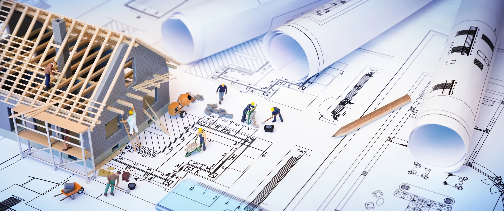
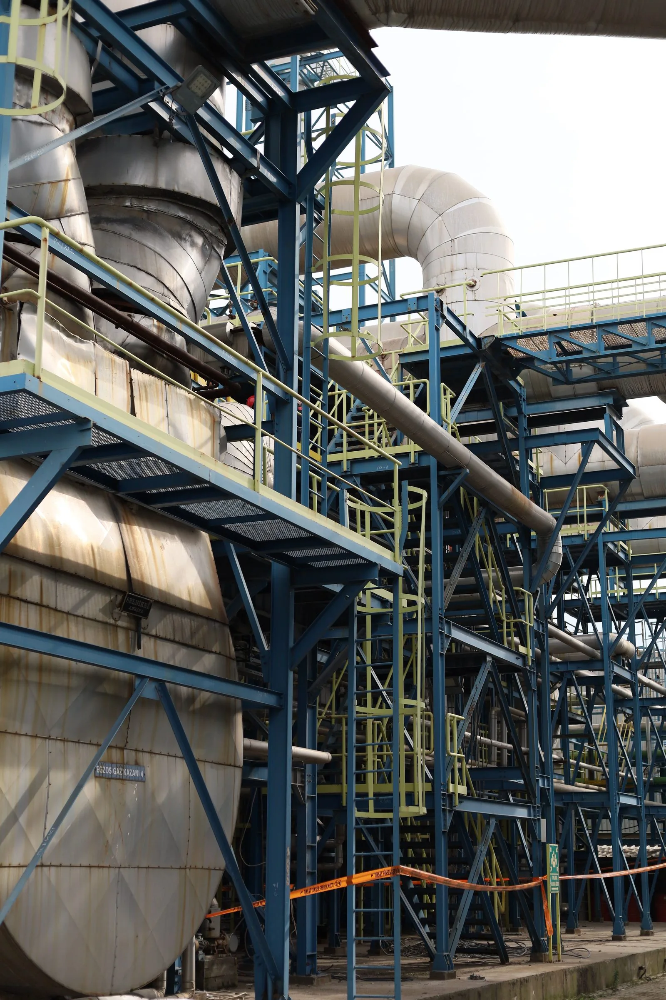
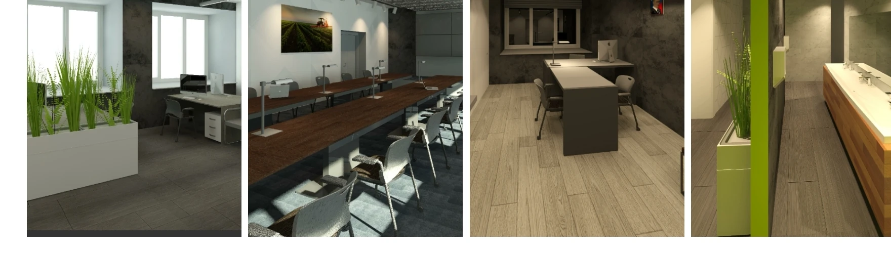

Статьи
и материалы
Делимся опытом проектирования, строительства и управления проектами в промышленности.
Подобрать материал
АктуальноеФункции технического заказчика в строительстве
Что входит в работу: исходные данные, координация, контроль и готовность объекта.
Читать статью
СМР, надзор
Строительный контроль на промышленном объекте
Контрольные точки, документы и связь проекта с фактическими работами.
Читать статью
Контрольные точки на действующем производстве
Как связать работу на площадке, замечания и следующий этап.
Читать статью
Складской комплекс класса «А»
Инженерия и строительство распределительного центра.
Смотреть кейс

Исполнительная документация в строительстве
Что проверить в комплекте перед передачей.
Читать статьюСтроительный контроль на промышленном объекте
Контрольные точки, документы и замечания.
Читать статью
Логистический комплекс
Инженерия и строительство распределительного центра.
Смотреть кейс
Комплект исполнительной документации
Что проверить перед передачей материалов.
Читать статьюТочность на старте —
уверенность на финише.
Проверяем решения.
Исключаем риски.
Держим результат.
Доведём ваш объектот проекта до ввода
Организуем работу проектировщиков и подрядчиков, следим за сроками, качеством и документами. Вы в любой момент понимаете, что происходит на объекте и что нужно для следующего этапа.